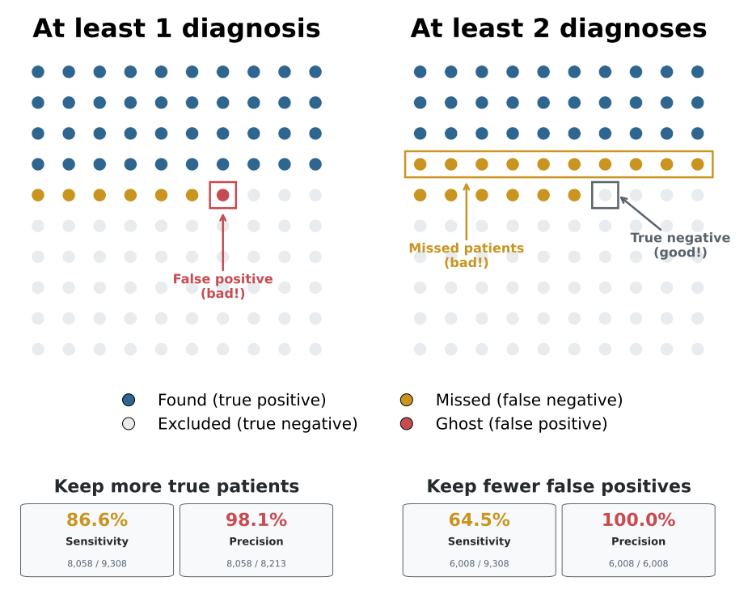
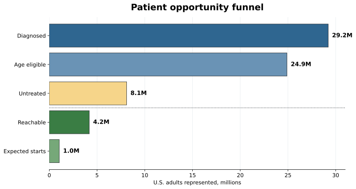
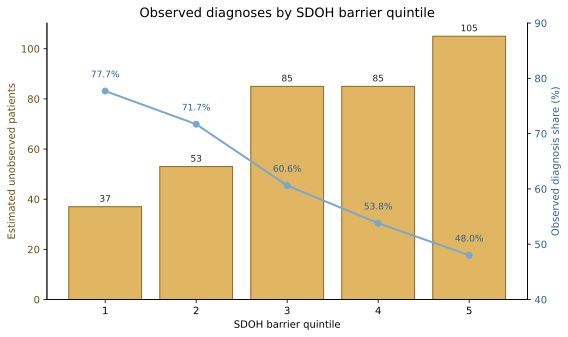
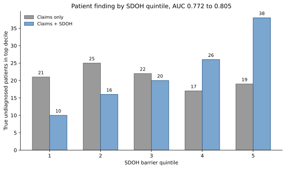

Chapter 4: Market Sizing and Patient Populations
The same Roventra disease produces two useful numbers: a diagnosed population of 29 million and an untreated opportunity of 8 million. Those numbers measure different populations and answer different questions about label, access, and competitive position.
The analysis starts from the synthetic package built in the data generation chapter. It narrows the population step by step through diagnosis, age eligibility, treatment status, and access, estimates the patients claims data never sees, and ranks undiagnosed patients with a patient-finding model.
Run the code blocks in order from the repository root, or open chapter4_walkthrough.ipynb to execute them as a notebook.
Note: The launch product is Roventra, a fictional once-daily oral medicine. Its competitors are Nexoral and Vexpro. The launch condition is modeled on Type 2 diabetes (ICD-10 codes E11.9, E11.65, E11.40). The age threshold, access probabilities, and conversion rate are scenario settings for this book's learning simulations. They are not a real product label or disease market. The
true_launch_conditioncolumn inpatients.csvis a synthetic reference field that records each patient's actual condition. It comes from the simulation and does not exist in real claims data. We use it only to validate the analysis results.
4.1 One Disease, One Medicine, Four Market Sizes
True disease, a coded diagnosis, label eligibility, and treatment status each produce a different patient count for the same disease.
Label expansion can change who qualifies. Expanding an existing drug's label is often more practical than developing a new molecule, because the product already has safety, manufacturing, and commercial history. FDA can approve a new age band or a broader indication and turn a previously off-label population into an eligible one.
Listing 4.1: Build the patient analysis table
import pandas as pd
DATA = "ch03_data/output_data/generated_data"
LAUNCH_CODES = ["E11.9", "E11.65", "E11.40"] # the launch condition in ICD-10
PRODUCT = "Roventra"
patients = pd.read_csv(f"{DATA}/reference/patients.csv")
enroll = pd.read_csv(f"{DATA}/reference/patient_enrollments.csv")
patients = patients.merge(
enroll[["patient_id", "payer_id"]].drop_duplicates("patient_id"),
on="patient_id", how="left",
)
DX_COLS = [f"diagnosis_{i}" for i in range(1, 11)]
mc = pd.read_csv(f"{DATA}/claims_medical/medical_claims_mature.csv")
dx_mask = mc[DX_COLS].isin(LAUNCH_CODES).any(axis=1)
coded = mc[dx_mask]
paid_dx_count = coded.groupby("patient_id").size()
rx = pd.read_csv(f"{DATA}/claims_pharmacy/pharmacy_claims.csv",
dtype={"ndc": str, "ndc_prescribed": str})
ndc = pd.read_csv(f"{DATA}/reference/ndc_codes.csv", dtype={"ndc": str})
rx["drug_name"] = rx.ndc_prescribed.map(ndc.set_index("ndc").drug_name)
roventra = rx[rx.drug_name.eq(PRODUCT)].copy()
roventra["net"] = roventra.transaction_type.map({"PAID": 1, "REVERSED": -1}).fillna(0)
net_fills = roventra.groupby("patient_id").net.sum()
p = patients.copy()
p["true_condition"] = p["true_launch_condition"].fillna(False).astype(bool)
p["coded"] = p.patient_id.isin(coded.patient_id)
p["diagnosed"] = p.patient_id.map(paid_dx_count).fillna(0).ge(1)
p["diagnosed_2plus"] = p.patient_id.map(paid_dx_count).fillna(0).ge(2)
p["age_eligible"] = p.age_band.isin(["35-49", "50-64", "65+"])
p["treated"] = p.patient_id.map(net_fills).fillna(0).gt(0)
p["untreated"] = ~p.treated
The drug name is derived by joining the NDC reference table. The four market sizes read off that table:
sizes = pd.DataFrame([
("True condition (answer key)", p.true_condition.sum()),
("Launch diagnosis coded", p.coded.sum()),
("Age-eligible diagnosed", (p.diagnosed & p.age_eligible).sum()),
("Untreated opportunity", (p.diagnosed & p.age_eligible & p.untreated).sum()),
], columns=["market_size", "patients"])
print(sizes.to_string(index=False))
market_size patients
True condition (answer key) 9308
Launch diagnosis coded 8213
Age-eligible diagnosed 6998
Untreated opportunity 2278
The four rows use the same disease but different filters. The first row uses a synthetic field that records the true condition; it does not exist in real claims data. Section 4.5 estimates how many patients this field represents even when the diagnosis code never appears. The remaining rows apply the diagnosis, age, and treatment rules in order.
The untreated opportunity is the eligible population minus the treated population:
eligible = p.diagnosed & p.age_eligible
print(f"age-eligible diagnosed: {eligible.sum()}")
print(f"treated within cohort: {(eligible & p.treated).sum()}")
print(f"untreated opportunity: {(eligible & p.untreated).sum()}")
age-eligible diagnosed: 6998
treated within cohort: 4720
untreated opportunity: 2278

Figure 4.1. Each row starts from the same 9,308 true-condition patients. Colored dots show the share retained as the market question becomes more specific. Synthetic data.
4.2 What Claims Can See and Miss
A disease can exist without appearing as a diagnosis in claims when it has not been found, documented, or coded yet. A diagnosis can also appear for the wrong patient or the wrong condition. The synthetic generator introduces both kinds of realistic errors. The 8,213 coded patients calculated in Section 4.1 include false positives, and the true condition count is lower.
gates = pd.DataFrame([
("True condition (answer key)", p.true_condition.sum()),
("... coded with a launch diagnosis", (p.true_condition & p.coded).sum()),
("False positives (other condition, flagged)",(~p.true_condition & p.coded).sum()),
], columns=["gate", "patients"])
print(gates.to_string(index=False))
true_n = int(p.true_condition.sum())
print(f"\ncoded share: {100*(p.true_condition & p.coded).sum()/true_n:.1f}%")
gate patients
True condition (answer key) 9308
... coded with a launch diagnosis 8058
False positives (other condition, flagged) 155
coded share: 86.6%
86.6% of true patients receive a launch code at least once. A separate 155 patients with another condition pick up a launch code and become false positives. One specific patient illustrates the gap:
invisible = p[p.true_condition & ~p.diagnosed & ~p.treated].sort_values("patient_id")
pid = invisible.iloc[0].patient_id
print("first invisible true patient:", pid)
print()
print("Patient table")
print(p.loc[p.patient_id.eq(pid)].to_string(index=False))
print()
print("Medical claims table")
print(mc.loc[mc.patient_id.eq(pid), ["claim_date"] + DX_COLS[:3]].to_string(index=False))
print()
print("Rx table")
rx_view = rx.loc[rx.patient_id.eq(pid), ["date_of_service", "drug_name", "transaction_type", "reject_code"]].copy()
rx_view["reject_code"] = rx_view["reject_code"].apply(
lambda x: "" if pd.isna(x) else f"{int(x)}" if float(x).is_integer() else f"{x}"
)
print(rx_view.to_string(index=False))
first invisible true patient: PAT00046
Patient table
patient_id state region age_band sex true_launch_condition
PAT00046 NY Northeast 18-34 F True
Medical claims table
claim_date diagnosis_1 diagnosis_2 diagnosis_3
2024-06-28 F41.9 J45.909 E78.5
Rx table
date_of_service drug_name transaction_type reject_code
2024-06-09 Vexpro PENDED 70
2024-06-13 Vexpro PAID
2024-07-06 Vexpro PAID
PAT00046 truly has the launch condition, but the medical claim codes only anxiety, asthma, and dyslipidemia. The pharmacy record shows 2 paid Vexpro fills. PAT00046 is treated on a competitor and invisible to a diagnosis-based filter. Section 4.5 estimates how many patients like PAT00046 exist; Section 4.6 ranks them with a machine learning model.
4.3 One Diagnosis or Two?
A decision rule turns claims records into a patient condition flag. The choice is whether to require one diagnosis or at least two.
Listing 4.2: Score two claims rules against the true condition
def diagnostics(flag, truth):
tp = int((flag & truth).sum())
fp = int((flag & ~truth).sum())
fn = int((~flag & truth).sum())
return dict(TP=tp, FP=fp, FN=fn,
sensitivity_pct=round(100 * tp / (tp + fn), 1),
precision_pct=round(100 * tp / (tp + fp), 1),
)
diag = pd.DataFrame([
{"rule": "1+ paid diagnosis", **diagnostics(p.diagnosed, p.true_condition)},
{"rule": "2+ paid diagnoses", **diagnostics(p.diagnosed_2plus, p.true_condition)},
])
print(diag.to_string(index=False))
print(f"\nstrict rule correctly rejected {int((p.diagnosed & ~p.true_condition).sum())} false positive patients.")
print(f"at the cost of missed {int((p.diagnosed & p.true_condition).sum() - (p.diagnosed_2plus & p.true_condition).sum())} true patients.")
rule TP FP FN sensitivity_pct precision_pct
1+ paid diagnosis 8058 155 1250 86.6 98.1
2+ paid diagnoses 6008 0 3300 64.5 100.0
strict rule correctly rejected 155 false positive patients.
at the cost of missed 2050 true patients.
The one-diagnosis rule finds 86.6% of true patients (sensitivity) and keeps 98.1% of flagged patients correct (precision, or positive predictive value). Requiring at least two diagnoses removes all 155 false positives but drops 2,050 true patients. One diagnosis gives more coverage; two diagnoses give a smaller, cleaner list at the cost of missed patients.

Figure 4.2. Requiring at least two diagnoses removes the 155 false positives but misses 2,050 true patients. Synthetic data.
The stricter rule reaches 100% precision here because every false positive patient carries only 1 launch diagnosis, and the two-diagnosis threshold removes them all. That is a property of this synthetic file. In real claims data, some false positives carry 2 or more diagnoses, so the strict rule reduces but does not eliminate false positives while still losing true patients.
4.4 National Prevalence Anchor and Opportunity Funnel
The claims data contains 8,213 diagnosed patients, 41.1% of the 20,000-patient panel. For national scale, the external prevalence source is 11.3% diagnosed diabetes prevalence from NCHS Data Brief 516, applied to 258,554,106 U.S. adults age 20 and older from the 2024 Census adult population. The panel over-represents the true population because claims skew toward patients already receiving medical care.
US_ADULTS = 258_554_106 # 2024 Census resident population age 20+
PREVALENCE = 0.113 # NCHS Data Brief 516: diagnosed diabetes, adults 20+
panel_share = p.diagnosed.mean()
print(f"panel diagnosis share: {panel_share:.1%} ({p.diagnosed.sum()} of {len(p)})")
print(f"diagnosed diabetes rate: {PREVALENCE:.1%}")
print(f"US adults age 20+: {US_ADULTS:,.0f}")
print(f"external prevalence anchor: {US_ADULTS:,.0f} * {PREVALENCE:.1%} = {PREVALENCE * US_ADULTS:,.0f}")
panel diagnosis share: 41.1% (8213 of 20000)
diagnosed diabetes rate: 11.3%
US adults age 20+: 258,554,106
external prevalence anchor: 258,554,106 * 11.3% = 29,216,614
The access rules in market_access_rules.csv are inspected as of December 31, 2024.
Listing 4.3: Inspect the active access rules
access = pd.read_csv(f"{DATA}/market_access/market_access_rules.csv",
parse_dates=["effective_start", "effective_end"])
ANALYSIS_DATE = pd.Timestamp("2024-12-31")
rules = access[access.product_name.eq(PRODUCT)
& access.effective_start.le(ANALYSIS_DATE)
& access.effective_end.ge(ANALYSIS_DATE)]
preview = (access[access.effective_start.le(ANALYSIS_DATE)
& access.effective_end.ge(ANALYSIS_DATE)]
[["payer_id", "region", "product_name", "coverage_status"]]
.drop_duplicates()
.sort_values(["coverage_status", "product_name", "payer_id", "region"])
.drop_duplicates("coverage_status")
[["payer_id", "region", "product_name", "coverage_status"]])
print(preview.to_string(index=False))
payer_id region product_name coverage_status
PAY002 Midwest Vexpro Covered
PAY003 Midwest Nexoral Covered with PA
PAY002 Midwest Nexoral Covered with Step Edit
PAY001 Midwest Nexoral Non-covered
Covered means the payer covers Roventra without extra approval. Claims can still reject for administrative reasons and some patients will not fill even with coverage, so the probability is 90%.
Covered with Step Edit means the plan requires an extra formulary step before approving the requested drug. The probability is 75%.
Covered with PA means the plan requires prior authorization. The added friction puts the probability at 65%.
Non-covered means the plan does not cover Roventra as a standard benefit. A few patients still obtain it through exceptions, appeals, cash pay, or coupons, so the probability is 10%.
ACCESS_PROBABILITY = {
"Covered": 0.90,
"Covered with Step Edit": 0.75,
"Covered with PA": 0.65,
"Non-covered": 0.10,
}
Each patient's probability is attached from the access rule. Patients not matched to a rule receive an access probability of 0.
Listing 4.4: Assemble the nationally anchored opportunity funnel
p = p.merge(rules[["payer_id", "region", "coverage_status"]],
on=["payer_id", "region"], how="left")
p["access_probability"] = p.coverage_status.map(ACCESS_PROBABILITY).fillna(0.0)
elig = p.diagnosed & p.age_eligible
untr = elig & p.untreated
diagnosed_pop = PREVALENCE * US_ADULTS
age_eligible_rate = elig.sum() / p.diagnosed.sum()
untreated_rate = untr.sum() / elig.sum()
reachable_rate = p.loc[untr, "access_probability"].mean()
age_pop = diagnosed_pop * age_eligible_rate
untreated_pop = age_pop * untreated_rate
reachable = untreated_pop * reachable_rate
expected_starts = reachable * 0.25
funnel = pd.DataFrame([
("Diagnosed population", diagnosed_pop),
("Age eligible", age_pop),
("Untreated opportunity", untreated_pop),
("Reachable (access-adjusted)", reachable),
("Expected starts (25% assumed)", expected_starts),
], columns=["stage", "population"])
funnel["population"] = funnel["population"].map(lambda v: f"{v:,.0f}")
print(funnel.to_string(index=False))
stage population
Diagnosed population 29,216,614
Age eligible 24,894,419
Untreated opportunity 8,103,671
Reachable (access-adjusted) 4,188,972
Expected starts (25% assumed) 1,047,243

Figure 4.3. The first three stages are calculated counts from the panel and national anchors. The last two are based on access and conversion assumptions. Synthetic analysis with public anchors.
The age rule keeps 6,998 of 8,213 (85.2%) diagnosed panel patients, scaling to 24.9 million nationally. The untreated share, measured from the panel, is 2,278 of 6,998 (32.6%), producing 8.1 million. Access multiplies each untreated patient by a coverage probability rather than removing patients; the base of 8.1 million stays in the funnel and the access-adjusted reachable total is 4.2 million. The final 25% conversion is a scenario assumption, giving 1.0 million expected starts.
4.5 The Unobserved Population
No claim records PAT00046's launch diagnosis code. Capture-recapture, also called mark-recapture, estimates how many patients like her exist by comparing the overlap between two imperfect sources.
The method originated in ecology: a researcher captures animals, marks them, and releases them, then later captures a second group and counts how many were marked before. Many re-captures imply a small population; few imply a large one. In claims data, patient identifiers replace paint or tags. Patients appearing in both sources are the recaptured animals.
Let \(n_1\) be the number of patients in the medical record diagnosis source, \(n_2\) the number in the Roventra fill source, and \(m\) the number in both. The Chapman estimator is $$ \hat{N} = \frac{(n_1+1)(n_2+1)}{m+1} - 1 $$ It adds one to each count before dividing, which reduces the small-sample bias in the raw Lincoln-Petersen estimator \(\hat{N} = \frac{n_1 n_2}{m}\).
For confidence intervals, the Chapman form provides the following variance estimate:
The confidence interval uses a log scale: \(\text{CI} = \left[ (n_2 + n_1 - m - 0.5) + \frac{(n_2 - m + 0.5)(n_1 - m + 0.5)}{m + 0.5} e^{\pm z\sigma} \right]\)
Listing 4.5: Two-source capture-recapture for the launch condition
import math
def chapman(source_a, source_b):
n1, n2 = len(source_a), len(source_b)
m = len(source_a & source_b)
n_hat = (n1 + 1) * (n2 + 1) / (m + 1) - 1
z = 1.96
sigma = ((1 / (m + 0.5))
+ (1 / (n2 - m + 0.5))
+ (1 / (n1 - m + 0.5))
+ ((m + 0.5) / ((n1 - m + 0.5) * (n2 - m + 0.5)))) ** 0.5
base = n2 + n1 - m - 0.5
scale = ((n2 - m + 0.5) * (n1 - m + 0.5)) / (m + 0.5)
ci_low = base + scale * math.exp(-z * sigma)
ci_high = base + scale * math.exp(z * sigma)
return n1, n2, m, n_hat, ci_low, ci_high
paid_dx = set(coded.patient_id)
paid_rx = rx[rx.transaction_type.eq("PAID")]
source_b = set(paid_rx[paid_rx.drug_name.eq(PRODUCT)].patient_id)
n1, n2, m, n_hat, ci_low, ci_high = chapman(paid_dx, source_b)
print(f"n1={n1} n2={n2} m={m}")
print(f"Chapman={n_hat:,.0f} CI=[{int(ci_low):,}, {int(ci_high):,}]")
n1=8213 n2=6401 m=5541
Chapman=9,488 CI=[9,438, 9,543]

Figure 4.4. The overlap between two sources estimates how many patients both miss. Synthetic data.
The estimate is 9,488, compared with the true 9,308 in this synthetic file: 1.9% high, or 180 patients above the true launch condition population. The method assumes that each individual has a similar probability of being observed. In real data, sicker patients are more likely to appear in both medical and pharmacy records, which biases the estimate downward.
4.6 SDOH and Under-Observation
The Chapman estimator gives a national count. It does not say where the 415 hidden patients are or why they are missing. Patients in areas with limited primary care access, high uninsured rates, and transportation barriers see providers less often. Fewer encounters mean fewer opportunities to receive and code a diagnosis, even when the condition is present. Those patients are concentrated in the same geographies where social and economic barriers to care are highest.
Area-level social determinants of health (SDOH) provide the geographic signal. Four measures capture distinct barriers:
- Uninsured share (ACS table B27001): uninsured patients have fewer paid encounters and less diagnostic coding. They are less likely to appear in a paid-claims database even when the condition is present.
- Transportation burden (ACS commuting data, SVI Theme 4): delays initial diagnosis visits and medication refill pickup. High values appear in rural areas and in urban neighborhoods without reliable transit.
- Primary care access index (HRSA shortage area data): patients in shortage areas see fewer providers, generate fewer evaluation-and-management claims, and receive less frequent diagnostic coding. Even a motivated patient cannot receive a coded diagnosis without an accessible provider.
- Rural share (USDA rural-urban continuum): combines the other three barriers and independently predicts claims under-observation even after controlling for the remaining fields.
These four fields are combined into a composite sdoh_barrier_quintile (1 = lowest barrier, 5 = highest). This quintile is an area-level planning index, not a description of any individual patient. A patient living in a high-quintile geography may or may not face those barriers personally.
build_sdoh_market_outputs() in sdoh_market.py builds the synthetic area table, market summary, model comparison, and account review flag. Listing 4.6 reads the local Chapter 4 outputs.
Listing 4.6: Summarize structural under-observation by barrier quintile
import pandas as pd
SDOH_OUT = "ch04_market/assets/generated_outputs"
market = pd.read_csv(f"{SDOH_OUT}/sdoh_market_summary.csv")
print(market.to_string(index=False))
sdoh_barrier_quintile areas true_condition_patients observed_diagnosed estimated_unobserved observed_share_pct
1 4 166 129 37 77.7
2 4 187 134 53 71.7
3 4 216 131 85 60.6
4 4 184 99 85 53.8
5 4 202 97 105 48.0
Observed diagnosis share falls from 77.7% in Q1 to 48.0% in Q5. In the highest-barrier areas, roughly half of patients who truly have the condition do not appear in the diagnosis coding source. The estimated unobserved count rises from 37 in Q1 to 105 in Q5; Q4 and Q5 together account for 190 of the 365 estimated unobserved patients in this panel (52%).
The national-level Chapman estimate sets the overall scale. When area-level SDOH data is linked to a claims source, high-barrier geographies contribute a disproportionate share of the hidden patients. This decomposition adds a geographic prior: field resources, community health program investments, and diagnosis pathway reviews can be directed toward the areas where the capture rate is lowest.
Caution: These numbers come from a synthetic panel where
true_conditionis a known label. In real data you cannot observetrue_conditiondirectly. The SDOH analysis supports a hypothesis about where under-observation is concentrated. It does not prove that any specific area has exactly X hidden patients. Treat the quintile gradient as a planning prior, not a measurement.

Figure 4.5. Observed diagnosis share falls and estimated unobserved patients rise as SDOH barrier quintile increases. Synthetic area-level data.
The account-level output from this analysis is a diagnosis_pathway_flag on accounts in Q4 and Q5 with a large estimated unobserved count. The flag prompts the field medical team to ask whether local diagnosis guidelines and community health pathways are reaching all eligible patients in those territories.
4.7 Patient Finding: From Count to List
Capture-recapture places about 415 launch-condition patients outside both clean sources. A patient-finding model turns that count into a ranked list.
A gradient boosting model is trained on patients whose diagnosis is already known, then scored on patients whose diagnosis is not coded. The outcome is the confirmed condition. Features include medical activity, competitor and support drug fills, lab results such as A1C values, and demographics. A patient on a competitor drug with a high A1C and no coded diagnosis is the type of record the model ranks highly.
Listing 4.7: Rank undiagnosed patients by probability of the true condition
from sklearn.ensemble import GradientBoostingClassifier
lab = pd.read_csv(f"{DATA}/claims_lab/lab_results.csv")
a1c = lab[lab.test_name.eq("Hemoglobin A1c")]
diabetes_rx_patients = rx[
rx.diagnosis_code.str.startswith("E11", na=False)
& rx.transaction_type.eq("PAID")
].patient_id
f = p[["patient_id", "age_band", "region", "sex", "diagnosed", "true_condition"]].copy()
f["n_class_fills"] = f.patient_id.map(
paid_rx[paid_rx.drug_name.isin([PRODUCT, "Nexoral", "Vexpro"])].groupby("patient_id").size()
).fillna(0)
f["max_a1c"] = f.patient_id.map(a1c.groupby("patient_id")["result"].max()).fillna(0)
f["has_elevated_a1c"] = (f.max_a1c >= 6.5).astype(int)
f["diabetes_rx_proxy"] = f.patient_id.isin(diabetes_rx_patients).astype(int)
X = pd.get_dummies(f.drop(columns=["patient_id", "diagnosed", "true_condition"]),
columns=["age_band", "region", "sex"])
clf = GradientBoostingClassifier(random_state=20260613).fit(X, f.diagnosed.astype(int))
f["score"] = clf.predict_proba(X)[:, 1]
The model is applied to undiagnosed patients and the top of the ranked list is checked against the true conditions:
undx = f[f.diagnosed.eq(0)].sort_values("score", ascending=False)
base = undx.true_condition.mean()
print(f"undiagnosed patients: {len(undx):,}")
print(f"truly positive among them: {int(undx.true_condition.sum()):,} ({100*base:.1f}%)")
for frac in (0.10, 0.20):
top = undx.head(int(len(undx) * frac))
print(f"top {int(frac*100):>2}%: {int(top.true_condition.sum()):,} true "
f"({100*top.true_condition.mean():.1f}%), lift {top.true_condition.mean()/base:.1f}x")
print("PAT00046 percentile among undiagnosed:",
round(100 * (undx.score < undx.set_index('patient_id').loc['PAT00046', 'score']).mean(), 1))
undiagnosed patients: 11,787
truly positive among them: 1,250 (10.6%)
top 10%: 1,177 true (99.9%), lift 9.4x
top 20%: 1,211 true (51.4%), lift 4.8x
PAT00046 percentile among undiagnosed: 97.0
Among 11,787 undiagnosed patients, 10.6% truly have the condition. The model's top decile is 99.9% true, a 9.4-fold lift, and PAT00046 lands at the 97.0th percentile. The ranked list lets the team start with the highest-scored decile instead of reviewing all 11,787 undiagnosed patients to find 1,250 true cases. This approach is common in rare-disease and under-diagnosis programs.
Note: The synthetic generator plants these signals. Launch-condition patients are more likely to have elevated A1C results, launch-diagnosis coding, and Roventra or competitor fills, while age, region, and sex are only background features. That is why the model can rank the undiagnosed patients well in this teaching file.
The claims-only model has a structural blind spot. In high-barrier areas (Q4 and Q5), patients generate fewer primary care encounters. The same features that carry a clear signal in low-barrier geographies carry a weaker signal where records are sparse, because the model cannot distinguish "few encounters because condition is absent" from "few encounters because structural barriers prevent care-seeking." True patients in high-barrier areas tend to be ranked lower than they should be.
Adding area-level SDOH variables as model features partially corrects this. The composite quintile provides structural context: a patient with a moderate claims score in a high-uninsured_share, low-primary_care_access_index area is more likely to be a true positive than that score implies in a low-barrier area. build_sdoh_market_outputs() in sdoh_market.py runs both models and saves the comparison.
Listing 4.8: Compare claims-only and SDOH-enriched patient finding
import pandas as pd
SDOH_OUT = "ch04_market/assets/generated_outputs"
summary = pd.read_csv(f"{SDOH_OUT}/sdoh_model_summary.csv").set_index("model")
top_decile = pd.read_csv(f"{SDOH_OUT}/sdoh_model_top_decile.csv")
for label in ["Claims only", "Claims + SDOH"]:
row = summary.loc[label]
print(f"{label}: AUC {row['auc']:.3f}, "
f"true selected {int(row['true_patients_selected'])}, "
f"Q4-Q5 true {int(row['high_barrier_true_patients'])} "
f"({row['high_barrier_selected_share_pct']:.1f}% of top decile)")
print()
print("True undiagnosed patients in top decile, by SDOH quintile:")
print(top_decile[["sdoh_barrier_quintile",
"claims_only_true", "claims_sdoh_true"]].to_string(index=False))
Claims only: AUC 0.772, true selected 104, Q4-Q5 true 36 (34.3% of top decile)
Claims + SDOH: AUC 0.805, true selected 110, Q4-Q5 true 64 (63.5% of top decile)
True undiagnosed patients in top decile, by SDOH quintile:
sdoh_barrier_quintile claims_only_true claims_sdoh_true
1 21 10
2 25 16
3 22 20
4 17 26
5 19 38
The SDOH-enriched model raises AUC from 0.772 to 0.805. The larger operational change is the reallocation of the fixed-size top-decile list. Adding SDOH moves the action list toward Q4 and Q5, where claims signals are weakest and true patients are most likely to remain hidden. The claims-only model places 36 true patients from Q4 and Q5 in its top decile; the SDOH model places 64. It gains those patients largely by dropping Q1 and Q2 patients who, in low-barrier areas, are reachable through standard HCP engagement anyway.

Figure 4.6. SDOH features redirect the fixed-size patient-finding action list toward high-barrier areas. Synthetic area-level data.
4.8 From a Scored List to a Commercial Action
The patient IDs are tokenized; the brand does not receive direct patient identities. The ranked list supports two commercial uses: an HCP target list for field action, and a clean-room audience seed for privacy-preserving matching.
The HCP target list names physicians, accounts, territories, and the number of high-scoring undiagnosed patients linked to each physician. A field rep uses it to rank accounts and prepare a call plan with the local account team.
Listing 4.9: Produce the HCP targeting output
OUT = "ch04_market/assets/generated_outputs"
sdoh_scores = pd.read_csv(f"{OUT}/sdoh_patient_scores.csv")
hcp_targets = pd.read_csv(f"{DATA}/reference/hcp_targets.csv")
provider_events = pd.concat([
mc[["patient_id", "rendering_npi"]].rename(columns={"rendering_npi": "npi"}),
rx[["patient_id", "prescriber_npi"]].rename(columns={"prescriber_npi": "npi"}),
], ignore_index=True).dropna()
top_decile = sdoh_scores.head(int(len(sdoh_scores) * 0.10))[["patient_id", "sdoh_score"]].rename(
columns={"sdoh_score": "score"}
)
hcp_output = (provider_events.merge(top_decile, on="patient_id")
.merge(hcp_targets, on="npi", how="inner")
.groupby(["npi", "account_id", "territory", "state", "specialty_1"])
.agg(high_score_patients=("patient_id", "nunique"),
mean_score=("score", "mean"))
.reset_index()
.sort_values(["high_score_patients", "mean_score", "npi"],
ascending=[False, False, True])
.head(10))
hcp_output["mean_score"] = hcp_output.mean_score.map(lambda v: f"{v:.3f}")
print(hcp_output[["npi", "specialty_1", "territory", "state",
"high_score_patients", "mean_score", "account_id"]].to_string(index=False))
npi specialty_1 territory state high_score_patients mean_score account_id
9000000249 Oncology T04 FL 9 0.871 ACC147
9000000617 Primary Care T02 PA 8 0.862 ACC169
9000000026 Endocrinology T03 WA 8 0.861 ACC226
9000000506 Oncology T05 IL 8 0.854 ACC172
9000000616 Oncology T07 CA 6 0.875 ACC046
9000000160 Cardiology T08 TX 6 0.874 ACC207
9000000640 Primary Care T06 FL 6 0.867 ACC005
9000000469 Endocrinology T02 IL 6 0.845 ACC121
9000000665 Oncology T06 NJ 6 0.839 ACC085
9000000520 Primary Care T07 FL 5 0.874 ACC110
Note: Due to the synthetic limitation, the provider specialties were assigned independently of the patient condition. The HCP list is built by rolling the scored patients up to the linked providers and accounts, so specialties like oncology and cardiology can appear even though the launch condition is diabetes.
The secondary path is direct-to-consumer (DTC) advertising through privacy-preserving audience matching. Token exchange vendors such as Datavant and HealthVerity bridge tokenized patient records to digital advertising IDs through HIPAA-compliant clean rooms. The high-scoring patients become a seed audience, and the brand pays to reach people statistically similar to that audience on approved channels without identifying individuals. This track runs in parallel to HCP promotion and is most effective for conditions where patients seek diagnosis once they recognize symptoms.
Note: In practice, full DTC prescription-drug advertising is allowed in the U.S. and New Zealand, while most other countries ban it or allow only limited forms.
Listing 4.10: Produce the audience matching seed
audience_seed = sdoh_scores.head(10)[[
"patient_id", "sdoh_score", "age_band", "region", "sex",
"n_class_fills", "max_a1c", "diabetes_rx_proxy",
]].copy()
audience_seed["sdoh_score"] = audience_seed.sdoh_score.map(lambda v: f"{v:.3f}")
audience_seed["max_a1c"] = audience_seed.max_a1c.map(lambda v: f"{v:.1f}")
print(audience_seed.to_string(index=False))
patient_id sdoh_score age_band region sex n_class_fills max_a1c diabetes_rx_proxy
PAT19399 0.907 18-34 South F 2.0 8.0 1
PAT02023 0.905 18-34 Midwest F 0.0 0.0 1
PAT17759 0.902 18-34 South M 0.0 0.0 1
PAT00346 0.902 50-64 Midwest F 0.0 0.0 1
PAT04872 0.901 18-34 South F 1.0 9.2 1
PAT01623 0.901 18-34 West F 0.0 0.0 1
PAT10634 0.901 65+ West F 1.0 8.7 1
PAT02602 0.901 18-34 Northeast F 0.0 10.2 1
PAT04001 0.900 18-34 South M 3.0 8.7 1
PAT10193 0.900 65+ South F 5.0 9.1 1
4.9 Market-Sizing Bridge
The table below collects the numbers built in earlier sections and shows where each one comes from.
Table 4.3. The final market-sizing bridge.
| Stage | Estimate | Main input | Lever |
|---|---|---|---|
| Diagnosed population | 29,216,614 | External prevalence and Census | Diagnosis programs |
| Age eligible | 24,894,419 | Age rule | Label and indication |
| Untreated opportunity | 8,103,671 | Net Roventra treatment state | Competitive share |
| Reachable opportunity | 4,188,972 | Assumed access probabilities | Payer access |
| Expected starts | 1,047,243 | Assumed 25% conversion scenario | Conversion and field |
The 29 million figure is the anchored diagnosed population. The 8.1 million is the diagnosed, age-eligible, untreated population. The 4.2 million applies the access rules to that untreated group, and the 1.0 million applies the conversion assumption on top of that. PAT00046 sits outside the coded and treated rows: missed by the diagnosis-based filter, counted by capture-recapture in the unseen group, and ranked by the patient-finding model.
4.10 Summary
The analysis anchored the Roventra market to an external prevalence source and moved through diagnosis, age eligibility, untreated opportunity, access, and expected starts. Capture-recapture estimated the patients both sources miss. Area-level social determinants of health showed that the ~415 unobserved patients are not uniformly distributed: observed diagnosis share falls from 78% in low-barrier areas to 48% in high-barrier areas, a 30-percentage-point gradient that tells the field team where to focus diagnosis pathway reviews. Adding SDOH features to the patient-finding model raised AUC from 0.772 to 0.805 and redirected the top-decile action list toward high-barrier areas. Patient finding turned that count into a ranked list, and the final step converted the list into two commercial outputs: audience matching and HCP targeting.
4.11 Exercises
Each exercise is solvable with the package you generated and a dozen lines of pandas or scikit-learn.
- Pick an index date. The funnel built above counts everyone diagnosed during 2024, a prevalent cohort. A new-start analysis counts only patients whose first paid launch diagnosis falls in a chosen window. Restrict the diagnosed cohort to patients whose first paid launch diagnosis is in the second half of 2024, recompute the untreated count, and state which commercial question the prevalent cohort answers and which the incident cohort answers. (Hint: index-date choice is the foundation of the line-of-therapy logic covered in the treatment journey chapter, and the two cohorts need different external anchors.)
- Change the access date. Build an access rule that changes midyear for one payer, then compare the reachable estimate immediately before and after the effective date using the as-of-date join from Listing 4.3. State whether the estimand, the estimator, or both changed. (Hint: the honest answer connects to the competitive access chapter.)
- Break patient finding on purpose. Retrain the Listing 4.8 model but add a feature that leaks the launch diagnosis (for example, the launch code count). Show what happens to the held-out AUC and to the top-decile precision among undiagnosed patients, and explain why a model that looks better in validation would find nobody new in production. (Hint: leakage rehearses the bias thinking covered in the causal inference chapter.)
Two companion notebooks ship with this section: chapter4_walkthrough.ipynb replays the analysis as one executable story, and exercise_solutions.ipynb works the three exercises with discussion.
The treatment journey chapter follows the untreated patients: what they start, switch, stop, and restart.